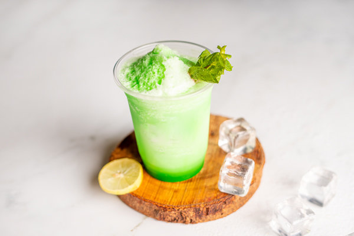

| Aromatic drink made by finely grinding coffee beans into a powder and then brewing it in a special pot called a cezve.The coffee is typically served unfiltered, resulting in a thick and strong beverage. | Freshly brewed coffee and hot milk.The coffee used is typically a medium or dark roast, resulting in a rich and robust flavor. |
| Delightful and indulgent blended coffee beverage, typically consists of a combination of coffee, milk, ice, and caramel syrup, blended together,often topped with whipped cream | Fruity and refreshing beverage made with a blend of various berries, such as strawberries, blueberries, raspberries, and blackberries.The berries are typically combined with ice, milk or yogurt, and a sweetener |
|  | |
| Refreshing and tropical beverage made from the pulpy flesh of ripe mangoes. It is rich in vitamins, minerals, and antioxidants | Zesty and invigorating beverage that combines the tangy freshness of lemons with the cool and aromatic flavor of mint. It is a mixture of squeezed fresh lemons, mint leaves, and a sweetener |
 |
|
| Flavorful and fizzy beverage that combines the sweetness of cherries with the familiar taste of cola. It is made by adding cherry syrup or cherry-flavored cola syrup to regular cola | Classic cocktail made with a combination of rum, fresh lime juice, mint leaves, sugar, and soda water,muddled together and mixed with ice.They are often garnished with a sprig of mint and a lime wedge. |